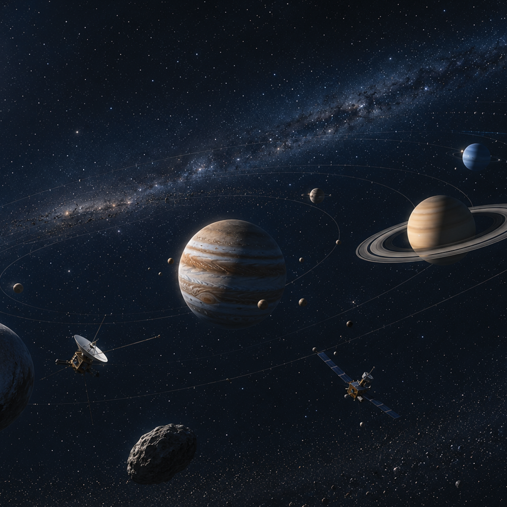

+11
In the outer solar system, regions that were largely speculative in 1977 are now mapped with direct observational data. Dwarf planets such as Pluto, once seen as distant points of light, have been identified and studied in detail, reshaping the structure of the solar system itself. Gas giants like Jupiter and Saturn are now understood through high-resolution imaging and long-term spacecraft data, revealing complex atmospheric systems, storms, and moons that were previously unknown. Advanced deep-space imaging and probes have turned what was once theoretical into measured reality.
Ironically, the original Powers of Ten was released the same year the Voyager program began. Back then, much of the outer solar system existed only in low-resolution telescopic guesses and artist impressions. Today, that same region has been visited, photographed, and continuously analysed—transforming it from imagined space into a documented extension of human observation.